지메일 · 캘린더 · 드라이브 · 구글챗,
이것만 알면 업무에 막힘이 없습니다
우리 회사는 회사 구글 계정 하나로 메일, 일정, 파일, 사내 메신저를 모두 씁니다. 이 문서는 구글 도구를 한 번도 안 써본 분이 기초부터 익히고, 우리 회사가 실제로 쓰는 방식까지 따라 할 수 있도록 만든 설명서입니다.
화면 캡처는 전부 실제 우리 회사 계정 화면입니다. 개인정보와 업무 내용은 흐리게 처리했습니다. 본인 화면을 옆에 띄워두고 따라 해 보세요.
00 → 01 지메일 기초 → 04 캘린더 기초 → 05 입사 첫날 캘린더 세팅 → 07 드라이브 기초 → 09 구글챗 기초 → 10 우리 회사 구글챗 업무 방식. 나머지는 손에 익은 뒤 필요할 때 찾아보는 범용 사용법입니다.
구글 업무 도구 한눈에
기초입사하면 이름@sannamchon.co.kr 형태의 회사 구글 계정을 받습니다. 이 계정 하나로 아래 네 가지 도구를 모두 씁니다. 따로 가입할 필요는 없습니다.
지메일
회사 메일함. 거래처·협력사 등 바깥과 주고받는 공식 연락
캘린더
내 일정, 회의, 회의실 예약, 휴가, 동료 일정 확인
드라이브
파일 보관과 공유. 구글 문서·시트·슬라이드도 여기 저장
구글챗
사내 메신저. 1:1 대화와 부서·협업 방(스페이스)
무엇을 어디에 쓰나
도구마다 역할이 정해져 있습니다. 헷갈리면 이 표를 기준으로 고르세요.
| 이런 일을 할 때 | 쓰는 도구 | 예시 |
|---|---|---|
| 거래처·외부 업체에 공식 연락 | 지메일 | 견적 요청, 서류 요청, 발주·입고 관련 회신 |
| 동료에게 빠른 요청·보고·확인 | 구글챗 | 「확인 부탁드립니다」, 처리 완료 보고, 생산 수량 문의 |
| 업무 기록, 업무전달, 회의록 | 노션 | 할 일·업무전달 DB, 주간회의록 (노션 사용 설명서 참고) |
| 회의 잡기, 회의실·휴가 등록 | 캘린더 | 미팅 초대, 대회의실 예약, 연차 등록 |
| 파일 보관·공동 작업 | 드라이브 | 공유 드라이브의 부서 폴더, 구글 시트 공동 편집 |
처음 로그인할 때 할 일
개인 구글 계정을 이미 쓰고 있다면 크롬 오른쪽 위 프로필 아이콘 → 추가로 회사 계정 전용 크롬 프로필을 만드세요. 창이 아예 분리되어 메일을 잘못 보낼 일이 줄어듭니다. 화면 오른쪽 위 프로필에 집반찬연구소 표시가 보이면 회사 계정입니다.
어느 구글 화면이든 오른쪽 위 점 9개(⋮⋮⋮) 앱 버튼을 누르면 메일·캘린더·드라이브·챗으로 바로 이동합니다.
출근 후, 퇴근 전 확인 루틴
| 시점 | 확인할 것 |
|---|---|
| 출근 후 | ① 캘린더 오늘 일정 ② 구글챗 멘션·안 읽은 방 ③ 메일 받은편지함 ④ 노션 My Home |
| 퇴근 전 | ① 내일 일정 ② 답하지 않은 챗·메일 ③ 오늘 처리한 일 노션 정리 |
지메일 기초
기초지메일은 회사 메일함입니다. mail.google.com 또는 앱 버튼 → Gmail로 들어갑니다. 받은 메일은 대화(스레드) 단위로 묶여서, 같은 제목으로 오간 메일이 한 줄에 모입니다.
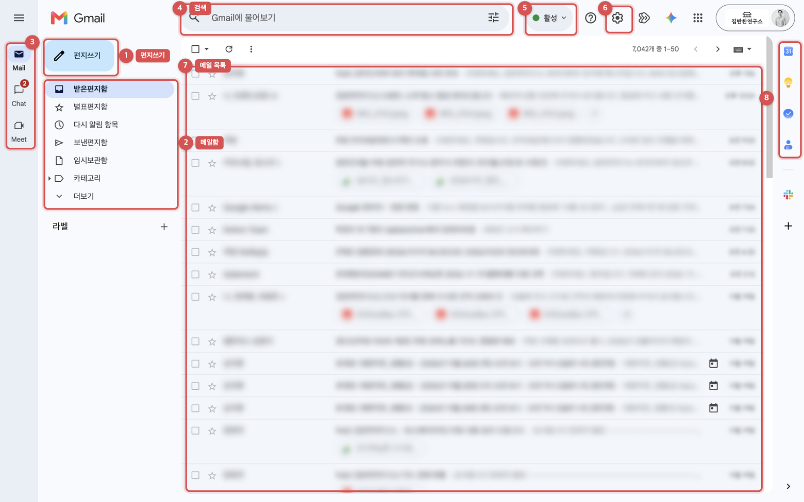
| # | 이름 | 하는 일 |
|---|---|---|
| 1 | 편지쓰기 | 새 메일 쓰기. 오른쪽 아래에 작은 창이 열립니다 |
| 2 | 메일함 | 받은편지함·별표·보낸편지함·임시보관함 등. 더보기를 누르면 전체보관함·스팸·휴지통이 나옵니다 |
| 3 | Mail / Chat / Meet | 메일 화면 안에서 구글챗, 화상회의로 바로 전환 |
| 4 | 검색 | 보낸 사람, 제목, 내용으로 메일 찾기. 오른쪽 아이콘은 고급검색 |
| 5 | 상태 | 구글챗 상태(활성·방해 금지·부재중) 표시 |
| 6 | 설정(톱니바퀴) | 빠른 설정 → 모든 설정 보기에서 서명·부재중 응답·필터 |
| 7 | 메일 목록 | 굵은 글씨 = 안 읽은 메일. 클릭하면 열립니다 |
| 8 | 사이드 패널 | 캘린더·Keep(메모)·Tasks(할 일)·주소록을 메일 옆에 띄우기 |
메일함 종류
| 메일함 | 뜻 |
|---|---|
| 받은편지함 | 새로 온 메일. 처리한 메일은 보관해서 비워두면 할 일만 남습니다 |
| 별표편지함 | 별(☆)을 눌러둔 메일. 다시 봐야 할 메일 표시용 |
| 다시 알림 항목 | 「내일 아침에 다시 보여줘」처럼 잠시 숨겨둔 메일 |
| 보낸편지함 | 내가 보낸 메일 |
| 임시보관함 | 쓰다가 닫은 메일. 자동 저장됩니다 |
| 전체보관함 | 보관한 메일까지 모든 메일. 지운 메일은 여기에도 없습니다 |
| 휴지통 | 삭제한 메일. 30일이 지나면 완전히 지워집니다 |
메일 쓰기
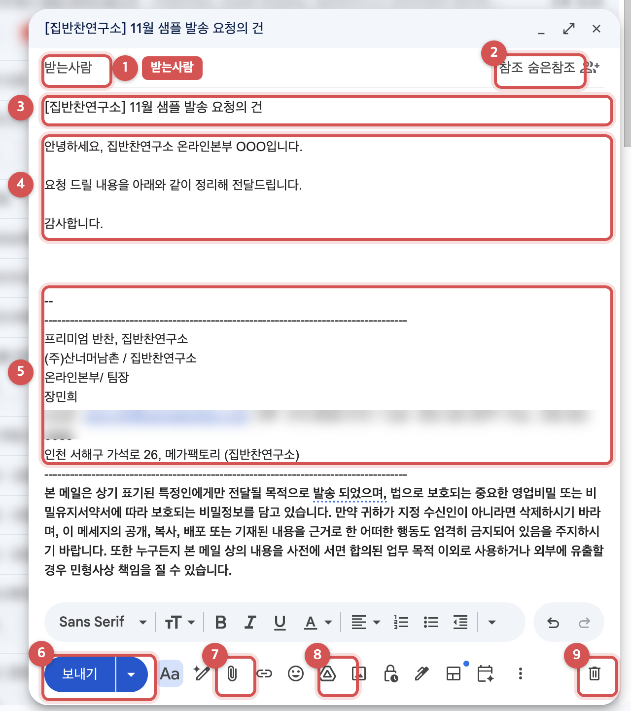
| # | 이름 | 설명 |
|---|---|---|
| 1 | 받는사람 | 메일을 처리해야 하는 사람. 이름이나 주소 일부를 치면 자동완성됩니다 |
| 2 | 참조 · 숨은참조 | 참조(CC): 알고 있어야 하는 사람. 숨은참조(BCC): 다른 수신자에게 안 보이게 넣을 사람 |
| 3 | 제목 | 제목만 보고 용건을 알 수 있게 (PART 03 제목 규칙) |
| 4 | 본문 | 인사 → 용건 → 요청과 기한 → 감사합니다 |
| 5 | 서명 | 설정한 서명이 자동으로 붙는 자리 |
| 6 | 보내기 · ▼ | ▼를 누르면 보내기 예약(원하는 시간에 발송) |
| 7 | 파일 첨부 | 내 컴퓨터 파일 첨부. 25MB가 넘으면 자동으로 드라이브 링크로 바뀝니다 |
| 8 | 드라이브 | 드라이브 파일을 링크로 넣기. 받는 사람의 열람 권한을 함께 확인합니다 |
| 9 | 휴지통 | 쓰던 메일(임시보관) 버리기 |
답장 · 전체답장 · 전달
받은 메일을 열면 아래쪽에 세 버튼이 있습니다.
답장
보낸 사람 한 명에게만 회신. 참조에 있던 사람은 빠집니다.
전체답장
받는사람·참조 전원에게 회신. 여러 명이 함께 보는 거래처 메일은 기본으로 전체답장을 쓰세요.
전달
받은 메일을 다른 사람에게 그대로 넘기기. 첨부도 같이 갑니다.
같은 건은 같은 스레드에
이미 오가던 건이면 새 메일을 쓰지 말고 그 메일에 답장하세요. 이력이 한 줄로 이어집니다.
지메일 더 잘 쓰기
범용메일이 쌓이기 시작하면 검색 · 정리 · 자동화 세 가지를 알면 훨씬 편해집니다.
검색 명령어
검색창에 아래 명령어를 섞어 쓰면 원하는 메일만 정확히 걸러집니다.
| 입력 | 뜻 |
|---|---|
from:coupang.com | 쿠팡 도메인에서 온 메일 |
to:이름 | 특정 사람에게 보낸 메일 |
subject:견적 | 제목에 「견적」이 들어간 메일 |
has:attachment | 첨부파일이 있는 메일 |
filename:xlsx | 엑셀 첨부가 있는 메일 |
after:2026/11/01 | 11월 1일 이후 메일 (before:는 이전) |
is:unread | 안 읽은 메일만 |
"발주서 전달" | 따옴표 안 문구가 정확히 들어간 메일 |
-광고 | 「광고」가 들어간 메일 빼기 |
from:kurly.com has:attachment after:2026/11/01 → 11월 이후 컬리에서 온 첨부 메일만
고급검색과 필터(자동 분류)
검색창 오른쪽 아이콘을 누르면 칸을 채워 검색할 수 있습니다. 같은 조건으로 필터 만들기를 누르면 앞으로 오는 메일에 라벨 붙이기, 별표, 보관 등을 자동으로 해줍니다.
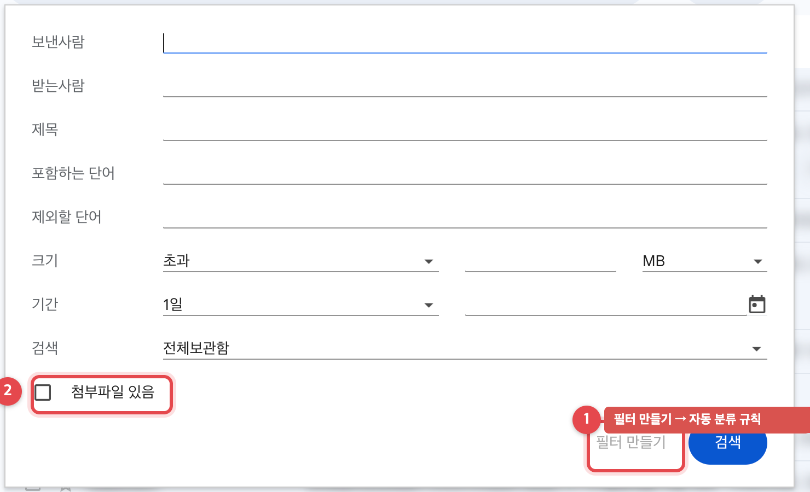
정리하는 방법
| 기능 | 설명 | 쓰면 좋은 때 |
|---|---|---|
| 라벨 | 폴더 대신 붙이는 꼬리표. 한 메일에 여러 개 붙일 수 있습니다. 왼쪽 라벨 +로 만듭니다 | 거래처별, 채널별 분류 |
| 보관 | 받은편지함에서만 치우기. 삭제가 아니라 검색하면 다시 나옵니다 | 처리 끝난 메일 |
| 별표 | 나중에 다시 볼 메일 표시 | 답장 대기 중인 메일 |
| 다시 알림 | 지정한 시간에 받은편지함 맨 위로 다시 올라옵니다 | 「다음 주 월요일에 확인」 |
| 읽지 않음 표시 | 읽었지만 다시 굵게 표시 | 아직 처리 안 한 메일 |
보내기 예약 · 보내기 취소
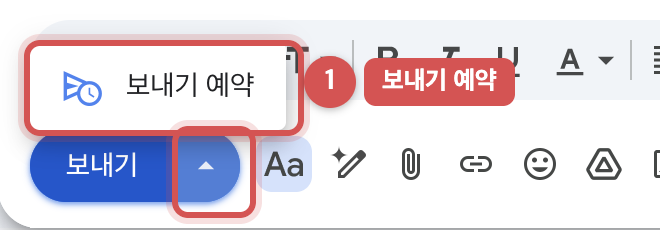
- 보내기 예약: 밤에 쓴 메일을 다음 날 오전 9시에 보내는 식으로 씁니다.
- 보내기 취소: 보낸 직후 왼쪽 아래 실행취소를 누르면 회수됩니다. 기본 5초이고, 설정 → 기본설정 → 보내기 취소에서 최대 30초까지 늘릴 수 있습니다. 30초로 바꿔두는 것을 권합니다.
부재중 자동응답
휴가처럼 며칠 메일을 못 볼 때 자동으로 회신이 나가게 합니다. 설정 → 모든 설정 보기 → 기본설정 맨 아래.
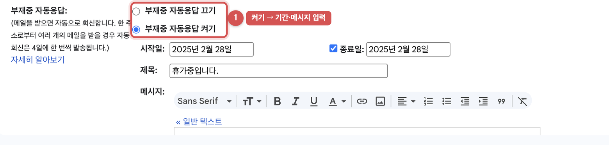
종료일을 안 넣으면 복귀 후에도 계속 자동응답이 나갑니다. 메시지에는 복귀일과 급한 건을 대신 처리할 동료를 적습니다.
우리 회사 메일 방식
회사메일은 회사의 얼굴로 바깥에 나가는 공식 문서입니다. 쿠팡·컬리 같은 판매 채널, 협력사, 물류사, 관공서와의 연락은 메일로 남깁니다. 사내 동료끼리의 요청은 메일보다 구글챗과 노션을 씁니다.
첫날 할 일: 서명 등록
- 지메일 오른쪽 위 설정(톱니바퀴) → 모든 설정 보기
- 기본설정 탭에서 아래로 내려 서명 찾기 → 새로 만들기 → 이름에 본인 이름 입력
- 오른쪽 칸에 아래 양식을 붙여넣고 본인 정보로 바꾸기
- 서명 기본값에서 「새로운 이메일」과 「답장/전달」 모두 방금 만든 서명 선택
- 페이지 맨 아래 변경사항 저장
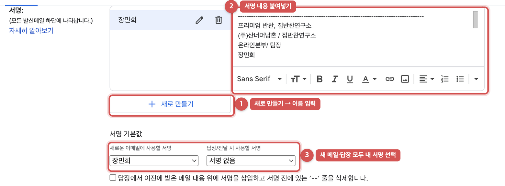
------------------------------------------------------------- 온라인 프리미엄 반찬 쇼핑몰 / (주) 산너머남촌 부서 / 직책 이름 ✉️ 이메일 📞 연락처 🏠 인천 서구 가석로 26 집반찬연구소 ------------------------------------------------------------- 본 메일은 상기 표기된 특정인에게만 전달될 목적으로 발송 되었으며, 법으로 보호되는 중요한 영업비밀 또는 비밀유지서약서에 따라 보호되는 비밀정보를 담고 있습니다. (이하 회사 양식 문구 그대로)
제목 쓰는 법
우리 회사 보낸 메일은 대부분 [집반찬연구소] + 용건 + 「~의 건」 형태입니다. 상대 회사가 정한 제목 양식이 있으면 그 양식을 따릅니다.
| 경우 | 제목 예시 |
|---|---|
| 우리가 먼저 보낼 때 | [집반찬연구소] 11월 샘플 발송 요청의 건 |
| 자료·회신 요청 | [집반찬연구소] 표시사항 추가 확인 요청의 건 |
| 급한 건 | [긴급][집반찬연구소] 입차 지연 요청의 건 |
| 회신 기한이 있을 때 | [거래처명] ○○ 서류 요청의 건_(주)산너머남촌_(~10/22 회신필요) |
| 받은 메일에 회신 | 제목을 바꾸지 않고 그대로 답장 (RE: 자동 표시) |
본문 구조
- 여러 명이 보는 거래처 메일은 전체답장
- 관련 담당자나 팀장을 참조에 넣어 진행 상황 공유
- 같은 건은 같은 스레드에서 이어가기
- 사내에서 꼭 알아야 할 외부 메일은 전달하거나 챗·노션에 요약 공유
- 개인 메일 계정으로 업무 메일 보내기
- 고객 개인정보·계좌·비밀번호를 본문에 그대로 적기
- 회사 파일을 「링크가 있는 모든 사용자」로 열어서 외부에 보내기 (PART 08)
- 받는사람 확인 없이 자동완성으로 바로 보내기
캘린더 기초
기초구글 캘린더는 내 일정표이자 회사 전체가 서로의 일정을 확인하는 곳입니다. calendar.google.com 또는 앱 버튼 → Calendar로 들어갑니다.
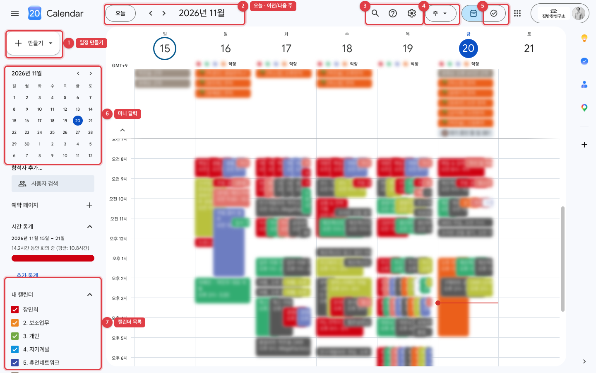
| # | 이름 | 하는 일 |
|---|---|---|
| 1 | 만들기 | 새 일정 만들기. 일정 칸의 빈 곳을 클릭해도 됩니다 |
| 2 | 오늘 · ‹ › | 오늘로 돌아가기, 이전·다음 주로 이동 |
| 3 | 검색 · 도움말 · 설정 | 일정 검색, 캘린더 설정(톱니바퀴) |
| 4 | 보기 전환 | 일 · 주 · 월 · 일정 목록 보기 |
| 5 | 캘린더 / Tasks | 일정 화면과 할 일(Tasks) 화면 전환 |
| 6 | 미니 달력 | 날짜를 누르면 그날로 이동 |
| 7 | 캘린더 목록 | 체크하면 보이고, 해제하면 숨겨집니다. 이름 옆 ⋮로 색상·설정 |
일정 만들기
빈 칸을 클릭하면 작은 창이 뜨고, 옵션 더보기를 누르면 아래처럼 자세한 화면이 열립니다.
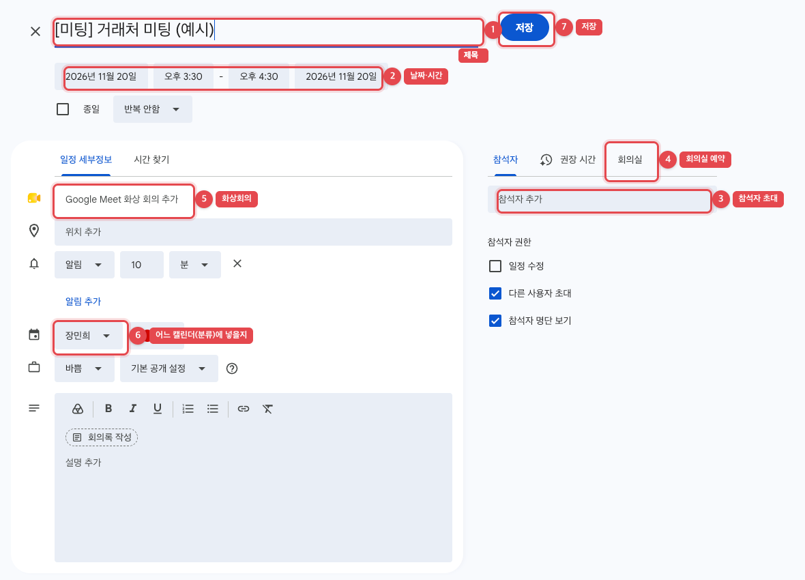
| # | 항목 | 설명 |
|---|---|---|
| 1 | 제목 | 무슨 일정인지 한눈에. 예) [미팅] 거래처명 미팅 |
| 2 | 날짜·시간 | 종일 체크, 반복(매주·매월) 설정 가능 |
| 3 | 참석자 | 이름을 넣으면 초대장이 메일과 캘린더로 갑니다 |
| 4 | 회의실 | 회사 회의실 예약 (PART 06) |
| 5 | Google Meet | 화상회의 링크 자동 생성 |
| 6 | 캘린더 선택 | 이 일정을 어느 캘린더(분류)에 넣을지 (PART 05) |
| 7 | 저장 | 참석자가 있으면 「초대 메일 보내기」를 묻습니다 |
초대받았을 때
초대받은 일정은 메일과 캘린더에 동시에 옵니다. 일정을 눌러 예 · 아니요 · 미정 중 하나로 꼭 응답하세요. 응답하지 않으면 주최자는 참석 여부를 알 수 없습니다. 시간이 안 맞으면 새 시간 제안을 쓸 수 있습니다.
동료 일정과 나란히 보기
동료 캘린더를 구독해 두면(PART 05) 일 보기에서 사람별로 칸이 나뉘어 보입니다. 회의 시간을 잡을 때 비어 있는 시간을 바로 찾을 수 있습니다.
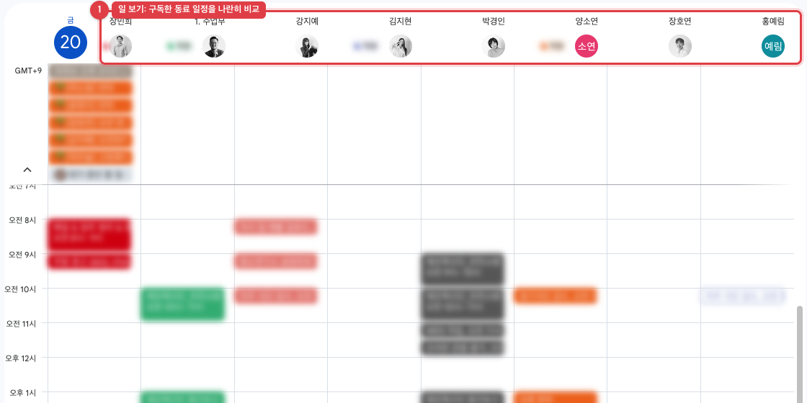
일정 만들기 화면에서 참석자를 넣고 시간 찾기 탭을 누르면 참석자 전원의 빈 시간이 겹쳐서 보입니다.
입사 첫날 캘린더 세팅
회사우리 회사는 일정을 성격별로 5개 캘린더에 나눠 담고 고유색을 붙입니다. 색만 봐도 한 주를 무엇에 썼는지 보입니다. 여기에 회사 공통 캘린더, 동료 캘린더, 회의실 현황을 더하면 세팅이 끝납니다. 아래 STEP을 순서대로 따라 하세요.
완성되면 이런 모습입니다
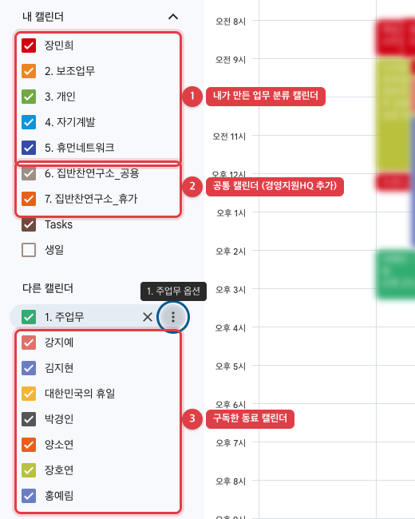
5개 업무 분류 캘린더
회사 교육자료 「스케줄 및 업무 관리 마스터하기」의 3P 바인더 방식입니다. 이름 앞 숫자는 목록 순서를 고정하려고 붙입니다.
| 캘린더 이름 | 담는 일정 (예시) | 색 (예시) |
|---|---|---|
| 내 이름 (기본) = 1번 주업무 | 내 직무의 핵심 업무, 회의, 미팅. 초대받은 회의도 여기에 들어옵니다 | 빨강 |
| 2. 보조업무 | 메일 정리, 서류 작업, 다른 부서 지원 등 핵심 업무를 받치는 일 | 주황 |
| 3. 개인 | 병원, 은행 등 근무 중 개인 용무 | 연두 |
| 4. 자기계발 | 교육, 세미나, 학습조직, 공부 | 하늘 |
| 5. 휴먼네트워크 | 거래처·업계 사람과의 관계 약속, 네트워킹 | 남색 |
내 이름으로 된 기본 캘린더는 지울 수 없고, 회의 초대가 자동으로 들어오며, 동료가 내 이름으로 구독하면 보이는 캘린더입니다. 그래서 기본 캘린더를 1번 주업무로 쓰고 2~5번만 새로 만듭니다. 기본 캘린더 이름을 「1. 주업무」로 바꾸는 방법도 있지만, 동료 목록에 같은 이름이 여러 개 생겨 헷갈리므로 이름 그대로 두기를 권합니다.
- 크롬에서 calendar.google.com 접속
- 오른쪽 위 프로필에 집반찬연구소가 보이는지 확인 (개인 계정이면 프로필을 눌러 회사 계정으로 전환)
- 왼쪽 아래 내 캘린더에 내 이름 캘린더 하나만 있으면 정상입니다
- 왼쪽 다른 캘린더 옆 ＋ 클릭
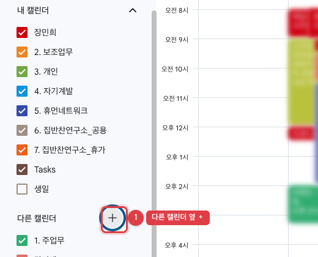
- 메뉴에서 새 캘린더 만들기 클릭 (아래 그림 A)
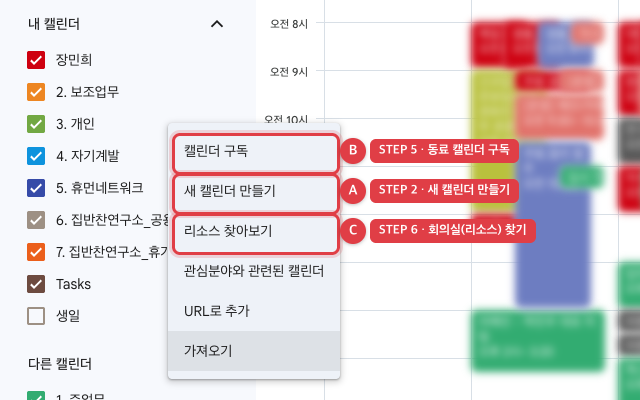
- 이름에 2. 보조업무 입력 (숫자, 마침표, 띄어쓰기, 분류명 순서)
- 캘린더 만들기 클릭
- 같은 방법으로 3. 개인, 4. 자기계발, 5. 휴먼네트워크를 만듭니다
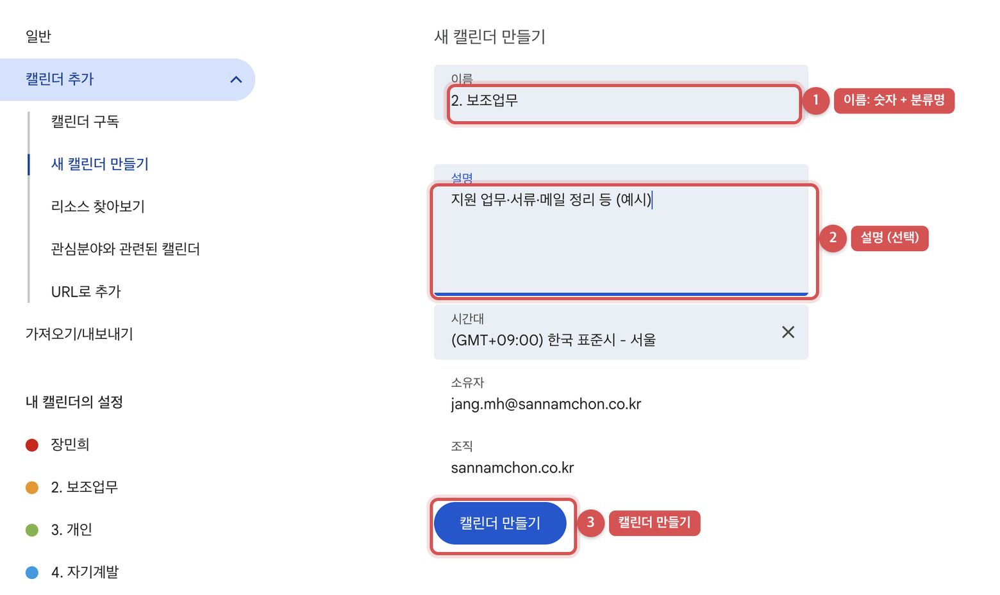
- 왼쪽 캘린더 목록에서 캘린더 이름 위에 마우스를 올리면 오른쪽에 ⋮가 나타납니다
- ⋮ 클릭 → 색상표에서 색 선택 (위 표의 예시 색 권장)
- 5개 모두 서로 다른 색으로 지정합니다
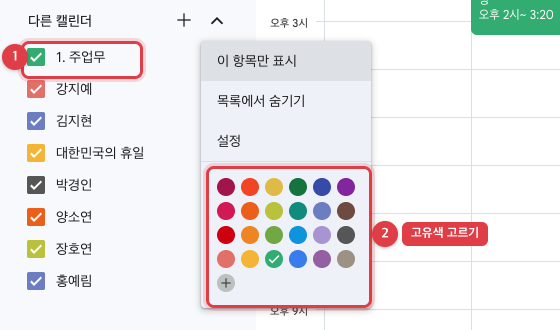
- 캘린더 이름 옆 ⋮ → 설정 및 공유 (또는 설정 → 왼쪽 「내 캘린더의 설정」에서 캘린더 선택)
- 일정의 액세스 권한에서 「집반찬연구소에서 사용할 수 있도록 설정」 체크 + 「일정 세부정보 보기」 선택
- 「공개 사용 설정」은 켜지 않습니다 (인터넷 전체 공개)
- 기본 캘린더(내 이름)와 2~5번 모두 같은 방법으로 확인합니다
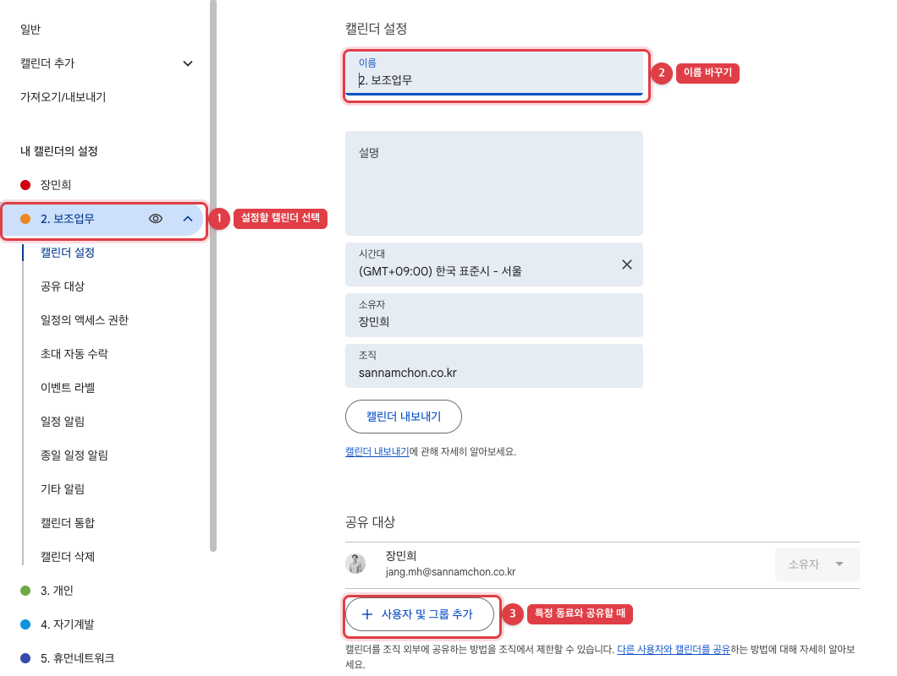
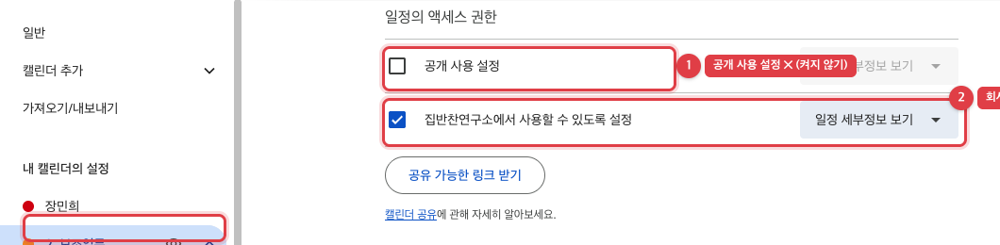
「3. 개인」만 한가함/바쁨 정보만 보기(세부정보는 숨김)로 바꾸면 동료에게는 「바쁨」으로만 보입니다.
① 공통 캘린더: 6. 집반찬연구소_공용, 7. 집반찬연구소_휴가는 직접 만들지 않습니다. 경영지원HQ에 추가를 요청하면 공유받아 「내 캘린더」 목록에 생깁니다.
| 공통 캘린더 | 들어 있는 일정 |
|---|---|
| 6. 집반찬연구소_공용 | 전사 행사(월간집반찬, 창립 기념행사 등), 주말·단축 근무 같은 전사 공유 일정 |
| 7. 집반찬연구소_휴가 | 전 직원의 연차·반차·대휴 (PART 06) |
② 동료 캘린더 구독
- 다른 캘린더 옆 ＋ → 캘린더 구독 (STEP 2 그림의 B)
- 「캘린더 추가」 칸에 동료 이름 입력 → @sannamchon.co.kr 주소인지 확인하고 클릭
- 같은 팀원, 사수, 팀장, 자주 협업하는 부서 담당자를 추가합니다
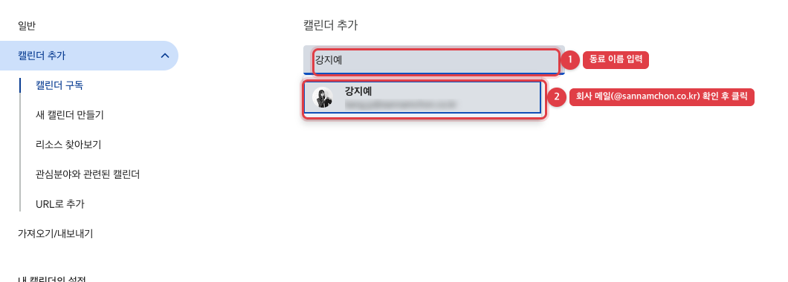
- 다른 캘린더 옆 ＋ → 리소스 찾아보기 (STEP 2 그림의 C)
- 회의실 3곳을 체크하면 각 회의실 예약 현황이 내 캘린더에 함께 보입니다
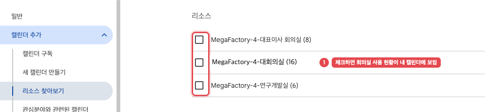
- 앱스토어·플레이스토어에서 Google Calendar 설치 후 회사 계정으로 로그인
- 앱 메뉴(☰)에서 회사 계정 아래 캘린더들이 체크되어 있는지 확인
- 할 일을 쓰는 분은 Google Tasks 앱도 함께 설치합니다 (캘린더와 별도 설치)
세팅 체크리스트
체크하면 이 브라우저에 저장됩니다. 다른 컴퓨터에서는 다시 체크해야 합니다.
우리 회사 캘린더 운영
회사세팅한 캘린더는 이렇게 씁니다. 핵심은 세 가지입니다. 일정은 분류해서 넣고, 회의실은 캘린더로 예약하고, 휴가는 휴가 캘린더에 남긴다.
일정을 넣을 때 캘린더(분류) 고르기
일정 만들기 화면의 캘린더 선택에서 어느 분류인지 고릅니다. 공용·휴가 캘린더는 정해진 경우에만 씁니다.
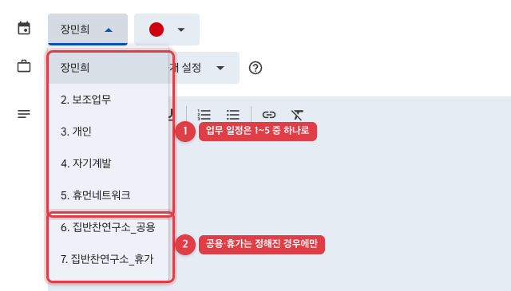
회의 잡기와 회의실 예약
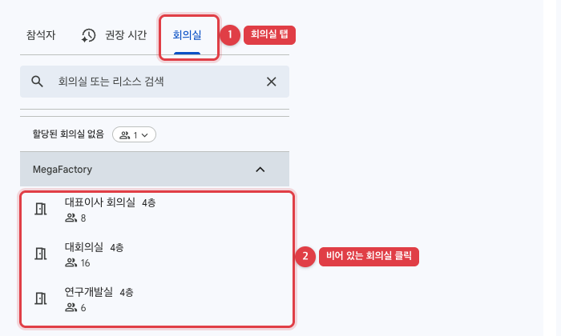
| 회의실 | 사용 기준 (회사 노션 「회의실 캘린더 사용 안내」) |
|---|---|
| 대회의실 (16인) | 일반 회의·미팅. 반드시 캘린더로 사전 예약 |
| 연구개발실 (6인) | 연구개발 업무가 최우선. 급한 연구개발 업무가 생기면 양보를 부탁받을 수 있습니다 |
| 대표이사 회의실 (8인) | 대표님 퇴근 이후에만 회의 공간으로 사용. 근무시간 중 예약 불가 |
회의실은 캘린더로 예약한 사람에게 사용 우선권이 있습니다. 예약 없이 쓰다가 예약자가 오면 비켜줘야 하고, 예약자가 눈치 보는 일이 없도록 예약제를 지킵니다. 문의는 회계파트로 합니다.
휴가 등록
| 항목 | 입력 |
|---|---|
| 캘린더 | 7. 집반찬연구소_휴가 |
| 시간 | 종일 체크 |
| 제목 (현재 쓰는 형식) | 🌴[이름] 연차 · 🌴[이름] 오전 반차 · 🌴[이름] 오후반차 · 🌴[이름] 생일반차 · 🌴[이름] 대휴 |
매일 쓰는 습관
- 출근 후 오늘 일정과 공용·휴가 캘린더를 보고 누가 자리에 없는지 확인합니다.
- 회의 초대는 미루지 말고 바로 응답합니다.
- 상사가 「이 일정 캘린더에 등록해 주세요」라고 하면 바로 등록하고 「등록했습니다」로 회신합니다.
- Google Meet 회의는 회의가 끝나면 Gemini 회의록이 참석자 메일로 올 수 있습니다. 내용을 확인해 노션 회의록에 정리합니다.
드라이브 기초와 공유
기초범용구글 드라이브는 인터넷에 있는 회사 공용 하드디스크입니다. 내 컴퓨터가 고장 나도 파일이 남고, 집이나 휴대폰에서도 열 수 있고, 여러 명이 한 파일을 동시에 고칠 수 있습니다. drive.google.com으로 들어갑니다.
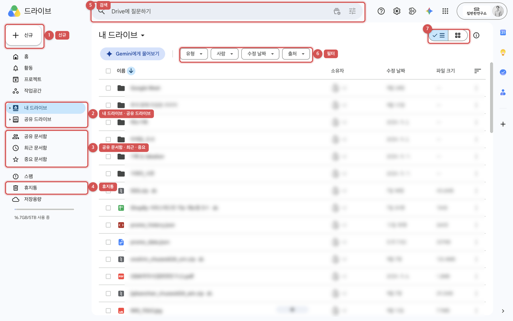
| # | 이름 | 하는 일 |
|---|---|---|
| 1 | 신규 | 폴더 만들기, 파일 올리기, 구글 문서·시트·슬라이드 새로 만들기 |
| 2 | 내 드라이브 · 공유 드라이브 | 내 드라이브 = 나 혼자 소유. 공유 드라이브 = 부서가 함께 소유 (PART 08) |
| 3 | 공유 문서함 · 최근 · 중요 | 남이 나에게 공유한 파일, 최근 연 파일, 별표한 파일 |
| 4 | 휴지통 | 지운 파일. 30일 뒤 완전히 삭제됩니다 |
| 5 | 검색 | 파일 이름뿐 아니라 문서 안의 글자로도 찾습니다 |
| 6 | 필터 | 유형(시트·PDF 등), 사람, 수정 날짜로 좁히기 |
| 7 | 목록 · 바둑판 보기 | 보기 방식 전환 |
새로 만들기 · 올리기
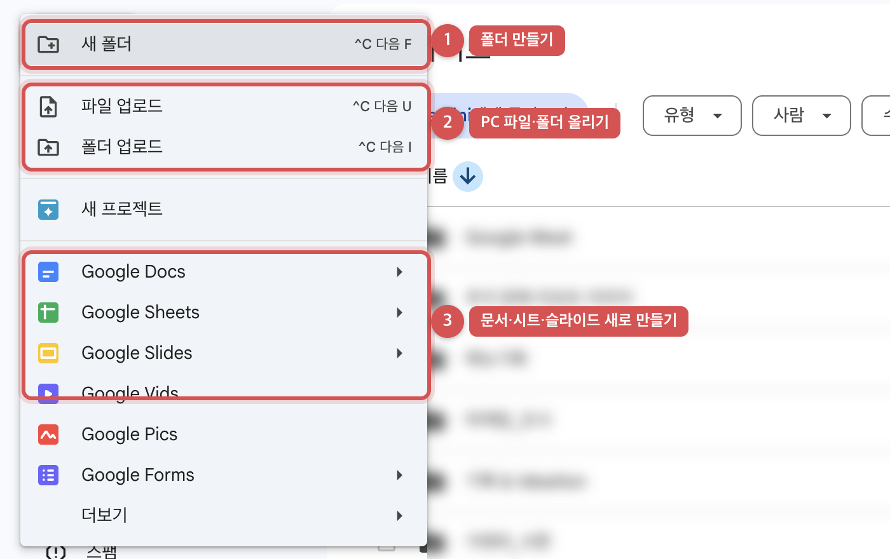
구글 문서 · 시트 · 슬라이드
워드·엑셀·파워포인트와 같은 역할. 저장 버튼이 없고 입력 즉시 자동 저장됩니다. 여러 명이 동시에 편집할 수 있습니다.
파일 업로드
엑셀·PDF·이미지를 그대로 올립니다. 화면으로 끌어다 놓아도 올라갑니다. 엑셀은 열어서 「Google 스프레드시트로 열기」를 누르면 시트로 바뀝니다.
공유하기
파일에서 오른쪽 클릭 → 공유 (또는 파일을 열고 오른쪽 위 공유 버튼).
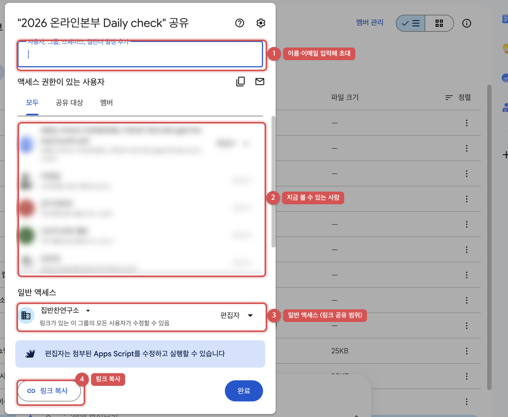
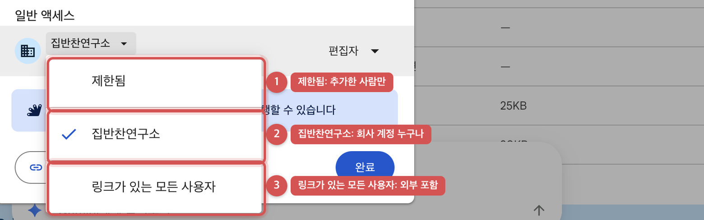
| 권한 | 할 수 있는 일 |
|---|---|
| 뷰어 | 보기만 |
| 댓글 작성자 | 보기 + 댓글 (내용 수정은 불가) |
| 편집자 | 수정, 다른 사람에게 공유까지 |
링크를 보냈는데 상대가 「액세스 권한 필요」 화면을 본다면 권한이 없는 것입니다. 공유 창에서 그 사람을 추가하거나 일반 액세스를 바꿔야 열립니다.
알아두면 좋은 기능
| 기능 | 방법 |
|---|---|
| 버전 기록 | 구글 문서·시트에서 파일 → 버전 기록 → 버전 기록 보기. 누가 언제 무엇을 고쳤는지 보고, 예전 상태로 되돌릴 수 있습니다 |
| 댓글과 @멘션 | 셀이나 문장을 선택하고 Ctrl+Alt+M → 댓글에 @이름을 넣으면 그 사람에게 메일 알림이 갑니다 |
| 바로가기 | 파일 오른쪽 클릭 → 정리 → 바로가기 추가. 파일을 복사하지 않고 내 폴더에서도 열 수 있게 |
| 데스크톱용 드라이브 | PC에 설치하면 탐색기·Finder에서 드라이브가 일반 폴더처럼 보입니다. 「스트리밍」은 용량을 거의 안 쓰고, 「미러링」은 PC에도 사본을 둡니다. PC를 켤 때 드라이브가 실행 중인지 확인하세요 |
우리 회사 드라이브 방식
회사회사 업무 파일은 공유 드라이브에 둡니다. 내 드라이브에 있는 파일은 내 소유라서 퇴사하거나 계정이 바뀌면 함께 사라질 수 있지만, 공유 드라이브 파일은 부서 소유라 계속 남습니다.
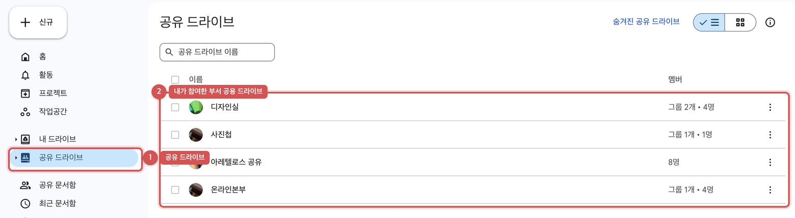
| 공유 드라이브 | 용도 |
|---|---|
| 온라인본부 | 온라인본부 업무 파일 (브랜드·채널별 폴더) |
| 디자인실 | 디자인 원본·작업 파일 |
| 사진첩 | 회사 행사·현장 사진 |
| 협력사 공유 드라이브 | 외부 협력사와 파일을 주고받는 전용 드라이브 (업체별로 따로 만듦) |
폴더 이름 규칙: 숫자로 순서 고정
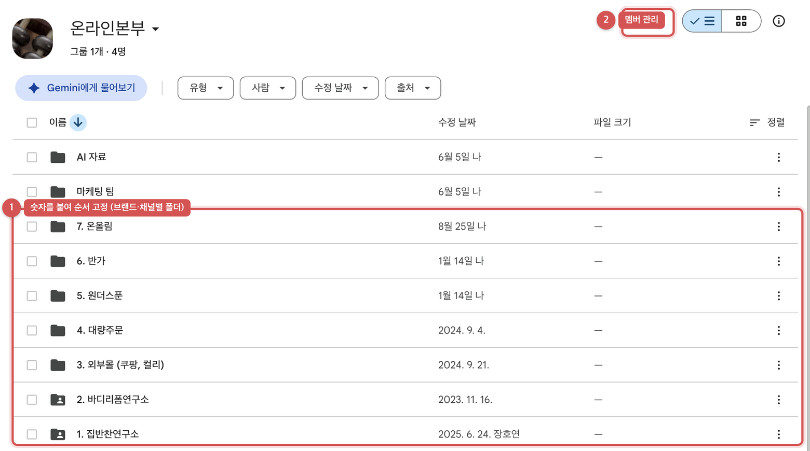
캘린더와 마찬가지로 폴더 앞에 숫자 + 마침표를 붙여 순서를 고정합니다. 새 폴더를 만들기 전에 이미 있는 폴더 구조 안에 넣을 수 있는지 먼저 확인합니다.
공유 드라이브 멤버 권한
| 역할 | 할 수 있는 일 |
|---|---|
| 뷰어 | 보기만 |
| 댓글 작성자 | 보기 + 댓글 |
| 참여자 | 파일 추가·수정·공유. 이동·삭제는 불가 |
| 콘텐츠 관리자 | 추가·수정·이동·삭제·공유 모두 |
| 관리자 | 위 전부 + 멤버 관리 |
동료나 협력사가 파일을 올리기만 하면 되는 경우 참여자 권한이면 충분합니다. 실수로 폴더를 옮기거나 지우는 일을 막을 수 있습니다.
공유할 때 지킬 것
- 사내 공유는 일반 액세스 「집반찬연구소」로 (회사 계정만 열림)
- 사내에서는 메일 첨부 대신 드라이브 링크 보내기 (최신본 하나만 유지)
- 구글챗에 공유할 땐 폴더보다 파일 링크 (폴더는 상대 권한이 없으면 경고가 뜹니다)
- 외부 업체와는 협력사 공유 드라이브나 특정 사람 추가로 공유
- 회사 파일을 「링크가 있는 모든 사용자」로 열어두기 (링크만 있으면 누구나 열람)
- 신분증·통장사본·카드 정보가 든 파일을 넓게 공유하기
- 업무 파일을 개인 드라이브나 개인 PC에만 두기
- 공유 드라이브의 다른 사람 폴더를 정리한다고 옮기거나 지우기
구글챗 기초
기초구글챗은 회사 메신저입니다. chat.google.com, 지메일 왼쪽 Chat, 데스크톱 앱, 휴대폰 앱 어디서 써도 같은 대화가 보입니다. 용어만 익히면 카카오톡과 비슷합니다.
채팅 메시지 (DM)
1:1 대화. 몇 명을 골라 만든 소규모 그룹 대화도 여기 들어갑니다.
스페이스
이름이 있는 단체방. 부서방, 협업방, 공지방. 우리 회사 업무는 대부분 스페이스에서 이뤄집니다.
대화목록 (스레드)
메시지 하나에 달리는 답장 묶음. 한 건의 이야기는 한 스레드 안에서 이어갑니다.
멘션 (@)
@이름으로 특정 사람을 부르면 그 사람에게 알림이 갑니다.
첫 화면
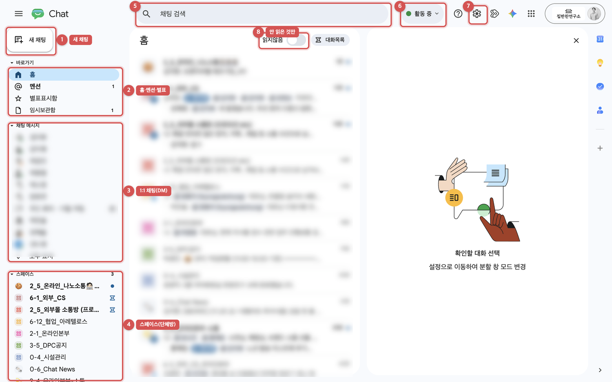
| # | 이름 | 하는 일 |
|---|---|---|
| 1 | 새 채팅 | 1:1 대화 시작, 스페이스 만들기·찾기 |
| 2 | 홈 · 멘션 · 별표 | 홈 = 모든 방의 새 메시지 모아보기. 멘션 = 나를 부른 메시지만. 별표 = 표시해둔 메시지 |
| 3 | 채팅 메시지 | 1:1·그룹 대화 목록 |
| 4 | 스페이스 | 참여 중인 단체방 목록. 굵은 글씨 = 안 읽은 메시지 있음 |
| 5 | 검색 | 사람, 방, 메시지 내용 검색 |
| 6 | 상태 | 자동 · 방해 금지 · 부재중 |
| 7 | 설정 | 알림, 데스크톱 앱 등 |
| 8 | 읽지않음 | 켜면 안 읽은 대화만 보입니다 |
대화 시작하기
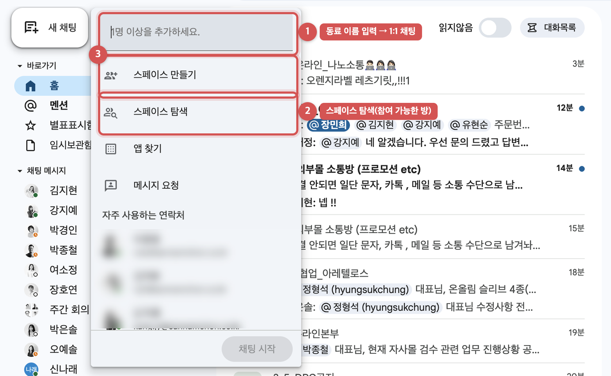
메시지 보내기
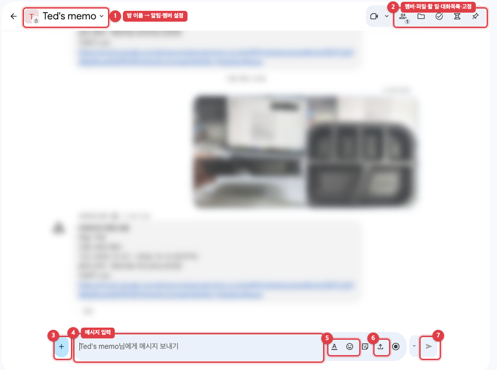
| # | 이름 | 하는 일 |
|---|---|---|
| 1 | 방 이름 | 누르면 멤버 보기, 알림 설정, 방 나가기 |
| 2 | 상단 아이콘 | 멤버 · 공유된 파일 · 할 일 · 대화목록 · 고정 메시지 |
| 3 | ＋ | 드라이브 파일, 화상회의, 일정 등 넣기 |
| 4 | 입력창 | Enter = 보내기, Shift+Enter = 줄바꿈 |
| 5 | 서식 · 이모티콘 | 굵게·목록 등 서식, 이모티콘 |
| 6 | 파일 업로드 | 사진·파일 첨부 (끌어다 놓기도 가능) |
| 7 | 보내기 | 옆 ▼로 예약 전송도 가능 |
*굵게* · _기울임_ · ~취소선~ 처럼 기호로 감싸면 서식이 적용됩니다. 사진과 일반 파일은 한 메시지에 같이 보낼 수 없어서, 사진을 먼저 보내고 파일은 다음 메시지(또는 스레드 답장)로 보냅니다.
@멘션
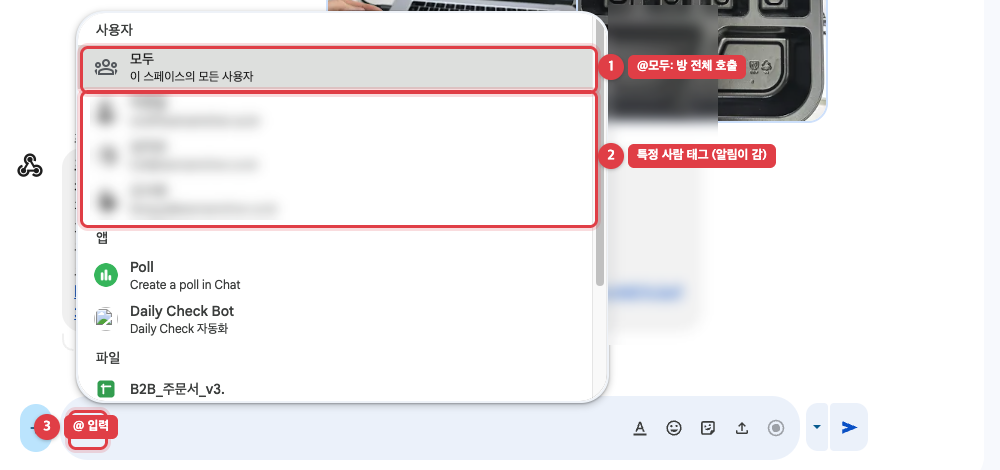
@모두는 방 전원에게 알림이 가므로 공지처럼 모두가 꼭 봐야 할 때만 씁니다.
메시지에 할 수 있는 것
메시지에 마우스를 올리면 오른쪽 위에 버튼이 나타납니다.
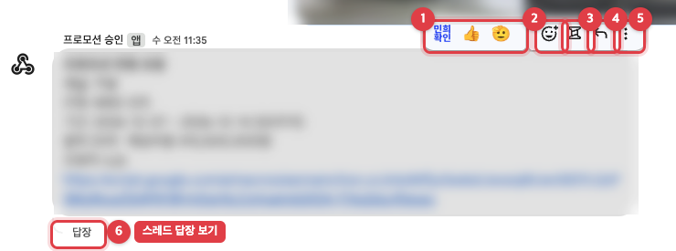
| # | 버튼 | 쓰임 |
|---|---|---|
| 1 | 빠른 반응 | 자주 쓰는 이모티콘 반응. 「확인했습니다」 대신 👍로 표시 |
| 2 | 반응 추가 | 다른 이모티콘 고르기 (회사에서 만든 이모티콘 포함) |
| 3 | 대화목록에서 답장 | 이 메시지에 스레드 답장. 업무 회신은 이걸 씁니다 |
| 4 | 답장에서 인용 | 메시지를 인용해 새 메시지로 답하기 |
| 5 | 더보기 ⋮ | 수정, 삭제, 별표, 링크 복사, 읽지 않음으로 표시 |
| 6 | 답장 | 스레드에 달린 답장 열어보기 |
상태와 알림
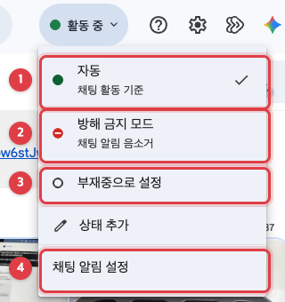
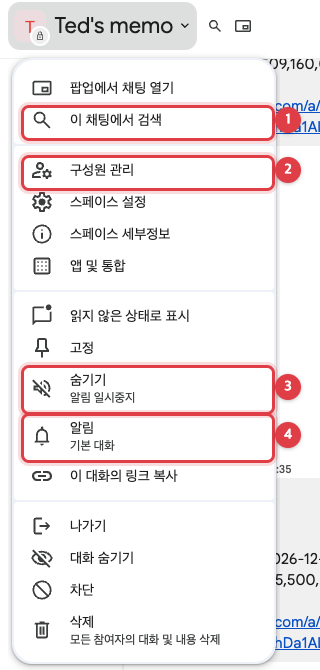
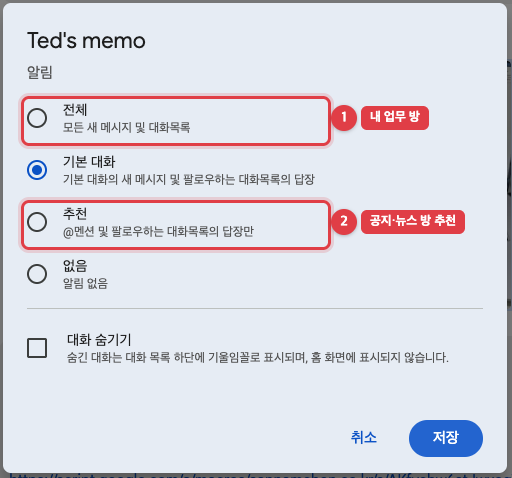
- 방해 금지 모드: 집중 작업 때 알림을 잠시 끕니다. 끝나면 다시 「자동」으로.
- 방별 알림: 방 이름 클릭 → 알림에서 「전체」「기본 대화」「추천」「없음」 중 고릅니다. 공지·뉴스처럼 나와 직접 관련 없는 방은 「추천」(@멘션과 내가 참여한 대화의 답장만 알림)이 적당합니다.
- 자리를 비운 동안 멘션을 받으면 지메일로 알림 메일이 옵니다 (「자리를 비운 동안 ○○님이 ○○에서 나를 멘션함」).
- PC에서는 chat.google.com 접속 후 주소창 오른쪽 설치 아이콘으로 데스크톱 앱처럼 쓸 수 있습니다.
우리 회사 구글챗 업무 방식
회사우리 회사는 업무 요청·보고·협업 대부분을 구글챗 스페이스에서 합니다. 방 이름 앞 숫자로 방의 성격을 구분하고, 한 건은 한 스레드에서 요청부터 완료 보고까지 이어가는 것이 기본입니다.
챗과 노션의 역할 나누기
구글챗 = 알리고 요청하는 곳
- 「확인 부탁드립니다」, 「완료했습니다」
- 급한 문의, 짧은 보고
- 생산·CS 등 다른 부서와 실시간 협업
노션 = 기록하고 남기는 곳
- 업무전달, 할 일, 회의록
- 긴 설명, 자료, 결정 내용
- 나중에 다시 찾아볼 내용
스페이스 이름 규칙
방 이름 앞 숫자가 방의 성격입니다. 아래는 온라인본부 기준 예시이며, 소속에 따라 참여하는 방이 다릅니다. 처음 입사하면 팀장이 필요한 방에 초대해 줍니다.
- 0-1_전사 공지사항전사 공지, 일일 매출 공지, 법인카드 정산 요청, 신규 입사자 자기소개
- 0-2_사진첩행사·현장 사진
- 0-4_시설관리시설 고장 신고, 수리 완료 공유
- 0-6_Chat News업계 뉴스·트렌드 공유
- 2-1_온라인본부대표님 보고·지시
- 2_4_온라인본부-소통자사몰·마케팅 실무 요청, 처리 보고
- 2_5_외부몰 소통방쿠팡·컬리·SSG 등 외부몰 업무, 프로모션
- 소규모 소통방팀원끼리 가볍게 묻고 답하는 방
- 3-5_DPC공지출고 작업 현황 (새벽배송·택배 진행률)
- 5-2_협업_생산&온라인생산 수량 문의·확정, 생산 특이사항, 품질·회송 이슈
- 5-6_협업_외포장반&사무직매일 생산 특이사항, 주문 건수
- 6-1_외부_CS · 6-2_외부_CS_온라인본부CS 위탁 상담사가 고객 문의를 올리고 담당자가 답하는 방
- 6-6_외부_디자이너외부 디자이너와 시안·수정 요청
- 6-8_외부_MIS 개발 · 6-12_외부_OMS 개발사내 시스템 개발사와 오류·요청 사항
- 6-12_협업_(업체명)협력사와 디자인·표시사항 등 공동 작업
- 6-13_명절_해피콜명절 기간 해피콜(주문 확인 전화) 진행 현황
원가, 마진, 내부 평가, 다른 거래처 조건처럼 외부에 나가면 안 되는 이야기는 6번대 방에 쓰지 않습니다. 내부 논의는 2번대·5번대 방이나 1:1 대화에서 합니다.
메시지 쓰는 형식
요청·보고 메시지는 아래 순서를 기본으로 씁니다. 한 줄에 한 문장, 항목은 「·」로 나눕니다.
- 받을 사람을 @태그 (태그가 없으면 알림이 안 갈 수 있습니다)
- 진행·완료 보고는 원래 메시지의 스레드 답장으로
- 확인만 했을 때는 👍 반응으로 「확인함」 표시
- 숫자·날짜·주문번호는 줄을 나눠 정확히
- 상사에게는 직함 호칭 (대표님, 본부장님, 팀장님)
- 한 건을 여러 방·여러 메시지에 흩어 쓰기
- 같은 내용을 1:1과 방에 중복으로 보내기
- 비밀번호·계정 정보를 챗에 그대로 남기기
- 고객 전화번호·주소를 업무 방 밖으로 옮기거나 캡처해 공유하기
- 공지방(0-1)에 개인적인 대화 쓰기
자주 쓰는 업무 흐름
① 팀 내 업무 요청 → 완료 보고 (2_4, 2_5 방)
② 고객 문의(CS) 처리 (6-1, 6-2 방)
고객 개인정보가 오가는 방입니다. 태그된 담당자는 당일 안에 스레드로 답하고, 내용은 방 밖으로 옮기지 않습니다. 원인 분석이나 내부 논의가 길어지면 사내 방(5-2 등)으로 옮겨서 하고, 결론만 CS 방에 답합니다.
③ 생산 부서와 협업 (5-2 방)
| 방향 | 주로 오가는 내용 |
|---|---|
| 온라인본부 → 생산 | 외부몰 발주 수량 확정 공유, 특정 주문 출고 요청, 품질 이슈 문의(사진 첨부), 회송 건 처리 요청 |
| 생산 → 온라인본부 | 매일 생산 특이사항(생산 종료·품절·출고 지연), 수량 확정 요청, 재고 공유 |
생산 계획을 세우는 날까지 수량이 확정되지 않으면 생산이 미뤄지거나 미출고가 생깁니다. 생산 부서가 물어본 수량·일정은 최우선으로 답합니다.
④ 대표님께 보고 (2-1 방)
결과 먼저, 숫자와 다음 일정을 분명히, 결정이 필요하면 무엇을 결정해 주셔야 하는지를 한 줄로 적습니다. 사실과 의견은 섞지 않습니다.
⑤ 신규 입사자 자기소개 (0-1 방)
입사 첫날 0-1_전사 공지사항 방에 자기소개를 올립니다. 구글챗이 익숙하지 않으면 메모장에 먼저 쓰고 붙여넣으세요.
⑥ 봇(자동 알림)
앱 목록에 보이는 MIS Bot, Daily Check Bot 같은 봇은 사내 시스템이 자동으로 보내는 알림입니다. 봇 메시지에 답장해도 사람이 받지 않으니, 확인이 필요하면 담당자에게 직접 문의합니다.
단축키 치트시트
범용마우스 대신 키보드로 하면 훨씬 빨라집니다. 위쪽에서 Windows / Mac을 고르면 표기가 바뀝니다.
설정 → 모든 설정 보기 → 기본설정 → 단축키 사용 선택 → 맨 아래 변경사항 저장. 어느 화면에서든 Shift+/ (?)를 누르면 전체 단축키 목록이 나옵니다.
지메일
| c | 편지쓰기 |
| r / a / f | 답장 / 전체답장 / 전달 |
| e | 보관 |
| s | 별표 |
| / | 검색창으로 |
| Ctrl+Enter | 보내기 |
캘린더
| c | 일정 만들기 |
| d / w / m | 일 / 주 / 월 보기 |
| t | 오늘로 |
| j / k | 다음 / 이전 기간 |
| / | 검색 |
구글챗
| Enter | 보내기 |
| Shift+Enter | 줄바꿈 |
| @ | 멘션 |
| ↑ | (빈 입력창에서) 방금 보낸 메시지 수정 |
문서 · 시트 공통
| Ctrl+Alt+M | 댓글 |
| Ctrl+K | 링크 넣기 |
| Ctrl+F | 찾기 |
| Ctrl+Z | 되돌리기 |
막혔을 때 Q&A
범용메일을 잘못 보냈어요
보낸 직후 왼쪽 아래 실행취소를 누르면 회수됩니다. 이미 시간이 지났다면 회수할 방법이 없으니 바로 정정 메일을 보내고 팀장에게 알리세요. 미리 설정에서 보내기 취소 시간을 30초로 늘려두면 안전합니다.
지운 메일·파일을 되살리고 싶어요
지메일은 휴지통, 드라이브도 휴지통에서 복원합니다. 둘 다 30일이 지나면 완전히 삭제됩니다. 구글 문서·시트의 내용을 잘못 지운 경우는 파일 → 버전 기록에서 이전 상태로 되돌립니다.
동료 캘린더가 안 보이거나 「바쁨」으로만 보여요
아직 구독하지 않았거나(PART 05 STEP 5), 그 동료가 세부정보를 숨겨둔 경우입니다. 왼쪽 목록에서 체크가 꺼져 있지 않은지도 확인하세요.
공용·휴가 캘린더가 없어요
공통 캘린더는 직접 만들지 않습니다. 경영지원HQ에 추가를 요청하세요.
회의실이 일정 화면에 안 나와요
일정 만들기 화면의 회의실 탭에서 MegaFactory를 펼치면 나옵니다. 캘린더 화면에 예약 현황을 띄우려면 ＋ → 리소스 찾아보기에서 회의실을 체크합니다.
업무 스페이스가 목록에 안 보여요
초대받지 않은 방입니다. 팀장에게 필요한 방 초대를 요청하세요. 새 채팅 → 스페이스 탐색에서 공개된 방을 직접 찾아 참여할 수도 있습니다.
챗 알림이 너무 많아요
공지·뉴스 방은 방 이름 → 알림 → 추천으로 바꾸세요. 내 업무 방은 「전체」나 「기본 대화」를 유지합니다. 집중할 때는 상태를 방해 금지로 두면 됩니다.
챗에서 Enter를 눌렀더니 메시지가 바로 가버려요
줄바꿈은 Shift+Enter입니다. 보낸 메시지는 마우스를 올려 ⋮ → 수정으로 고칠 수 있습니다.
드라이브 링크를 열면 「액세스 권한 필요」가 떠요
권한이 없는 상태입니다. 화면의 액세스 요청을 누르면 소유자에게 요청 메일이 갑니다. 급하면 공유한 사람에게 챗으로도 알려주세요.
개인 지메일과 회사 메일이 섞여요
크롬 프로필을 회사용으로 따로 만드세요 (PART 00). 메일을 보내기 전 오른쪽 위 프로필이 집반찬연구소인지 확인하는 습관을 들이세요.
첨부 파일이 너무 커서 안 붙어요
25MB가 넘는 파일은 지메일이 자동으로 드라이브 링크로 바꿔 넣습니다. 이때 받는 사람에게 열람 권한을 줄지 묻는 창이 뜨면, 외부인이라면 그 사람만 지정해서 공유하세요.
직접 해보기
기초읽기만 하면 손에 남지 않습니다. 아래 과제를 하나씩 해보고 체크하세요. 메시지 연습은 본인에게 보내거나 사수와 1:1 대화에서 하면 됩니다.